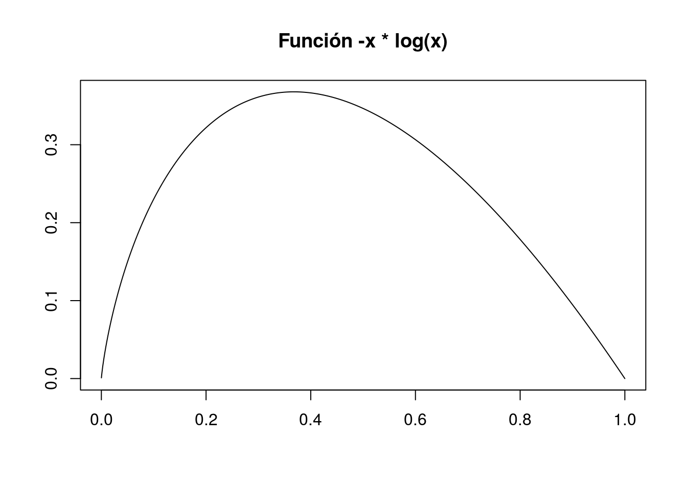

12.1 Programación imperativa en R
La programación imperativa es aquella en la que el estado de un programa, definido por el valor de sus variables, se modifica mediante la ejecución de comandos. El énfasis recae, además, en cómo se modifica el estado del programa y es frecuente el uso de bucles y expresiones condicionales. Es el tipo de programación a la que están acostumbrados los programadores en C, BASIC, mucho de C++, Python o Java, o MatLab.
12.1.1 Variables
Las variables ya son conocidas. Se crean con el operador de asignación <-.
mi.iris <- iris[1:10,]Las variables existentes en la memoria de R se pueden listar, borrar, etc.
ls()
rm(mi.iris)
ls()Al programar, en algunas ocasiones, resulta necesario conocer el tipo de las variables. Existen lenguajes tipados, como Java o Scala, donde al declarar una variable es obligatorio especificar la naturaleza (número, texto, etc.) del valor que contendrá. En R (al igual que Python), sin embargo, no lo es. Pero eso no elimina la necesidad de conocer el tipo de las variables en algunas ocasiones: durante el curso hemos visto cómo determinadas funciones operan de manera distinta (¡o fallan!) dependiendo del tipo de la variable subyacente. Por eso, frecuentemente, es necesario comprobar que los datos con los que trabajamos son del tipo adecuado.
En el código que aparece a continuación inquiremos el tipo de las variables implicadas:
mi.iris <- iris[1:10,]
class(mi.iris)## [1] "data.frame"is.data.frame(mi.iris)## [1] TRUEx <- 1:10
is.vector(x)## [1] TRUEclass(x)## [1] "integer"typeof(x)## [1] "integer"Este tipo de comprobaciones son importantes tras la lectura o la manipulación de datos para ver si se han procesado correctamente. También lo son cuando se crean funciones de propósito general y se quiere, por ejemplo, comprobar que el usuario proporciona a las funciones argumentos adecuados.
12.1.2 Funciones
Un análisis de datos consiste generalmente en una secuencia de comandos de R (posiblemente insertados dentro de un fichero .Rmd) que se ejecutan secuencialmente. En ocasiones, sin embargo, es conveniente crear funciones. Por ejemplo, cuando hay operaciones comunes que se realizan reiteradamente (incluso en análisis distintos).
Una función se define, por ejemplo, así:
calcular.cuota.hipoteca <- function(capital, anyos, interes){
interes.mensual <- interes / 12 / 100
meses <- 1:(anyos*12)
return(capital / sum(1 / (1+interes.mensual)^meses))
}Es decir, con function, seguido de la lista de argumentos y de un bloque de código (encerrado en llaves) que contiene el cuerpo de la función. Una función, típicamente, se asigna a una variable con <- (aunque veremos casos en que pueden usarse funciones anónimas). La función así creada puede invocarse:
calcular.cuota.hipoteca(100000, 20, 3)## [1] 554.5976La función, además, se convierte en un objeto normal de R; es decir, aparece en los listados de ls, que se puede borrar con rm, etc.:
calculadora.hipotecas <- calcular.cuota.hipoteca
calculadora.hipotecas(100000, 20, 3)## [1] 554.5976ls()## [1] "calculadora.hipotecas" "calcular.cuota.hipoteca"rm(calculadora.hipotecas)
Crea una función que, dado un número n calcule la suma de los n primeros términos de la serie de Leibniz para aproximar π. Nota: ya hemos realizado previamente este ejercicio; lo que se pide aquí es incluir aquel código dentro de una función.
Un bloque de código es un conjunto de líneas que se ejecutan secuencialmente. Para acotar los bloques de código se usan las llaves {}. Sin embargo, no son necesarias cuando el bloque consiste en una sola línea. Es decir,
cuadrado <- function(x){
return(x^2)
}y
cuadrado <- function(x) return(x^2)son ambas definiciones válidas de la función cuadrado.
Hemos usado return para que la función devuelva un valor. En algunos lenguajes de programación es obligatorio el uso de return; sin embargo, en R no: una función de R devuelve el último valor calculado dentro de su cuerpo. Así que una tercera opción equivalente y más sucinta para definir la función cuadrado es
cuadrado <- function(x) x^2En R, además, las funciones pueden tener argumentos con valores por defecto. Por ejemplo,
potencia <- function(x, exponente = 2) x^exponente
c(potencia(2), potencia(2, 3), potencia(2, exponente = 3))Los valores por defecto permiten, por ejemplo, llamar a funciones como read.table, que admite muchos argumentos, especificando solo algunos de ellos.
12.1.3 Expresiones condicionales
Las expresiones condicionales permiten ejecutar un código u otro en función de un criterio. Para ilustrar su uso en R, Comenzaremos definiendo y representando gráficamente la función xln, que aparece frecuentemente en estadística:
xln <- function(x){
return(-x * log(x))
}
x <- 1:10000 / 10000
plot(x, xln(x), type = "l", xlab = "", ylab = "",
main = "Función -x * log(x)")
Diríase que su valor en 0 es cero; sin embargo, en contra de nuestra intuición,
xln(0) # Nan cuando queremos cero!## [1] NaNPodemos, por lo tanto, arreglarla con una expresión condicional:
xln <- function(x){
if (x == 0)
return(0)
return(-x * log(x))
}Y ahora sí,
xln(0)## [1] 0
Modifica la función anterior para que dé un error cuando x sea menor que 0 o mayor que 1. Pista: la función stop() lanza un error. El argumento de stop es el texto que aparece en el mensaje de error.
En la definición anterior hay dos return. Uno sobra y el otro no. ¿Cuál es cuál?
Como ilustra el ejercicio anterior, es muy común que una función resuelva al principio uno o más casos particulares (y salga de ellos mediante returns dentro de expresiones condicionales) y que, una vez solventados, se plantee al final el caso general y más complejo. La salida de este último, típicamente, no necesita return.
Frecuentemente, if va acompañado de else:
xln <- function(x){
if (x == 0)
return(0)
else
return(-x * log(x))
}Nota: como antes, cuando el bloque de código que sigue a if (o else) contiene una única línea, se pueden ignorar las llaves. Si no, hay que usarlas.
¿Cuántos return sobran en la última definición de xln? ¿Por qué?
Existe una función en R, ifelse, que permite escribir la función anterior de una forma más compacta. Búscala en la ayuda y reescribe la función xln.
Crea una función que tome como argumento un vector de texto (o un factor) cuyas entradas sean números de la forma “1.234,56” y devuelva el correspondiente número subyacente, es decir, que elimine el separador de miles, etc. Ten en cuenta que cuando el vector de entrada sea del tipo factor tendrás que convertirlo previamente en otro de tipo character.
Modifica la función del ejemplo anterior de forma que si el usuario pasa como argumento un vector númerico devuelva ese número; si pasa un argumento del tipo character o factor, aplique la lógica descrita en ese ejercicio y, finalmente, si pasa un argumento de otro tipo, devuelva un error (usando stop) con un mensaje informativo.
12.1.4 Bucles
En la programación imperativa es habitual construir bucles dentro de los cuales se va modificando el valor de una expresión. Los bucles más habituales en R son los for. Su sintaxis es
for (var in vector){
# expresión que se repite
}Lo comentado más arriba sobre las llaves aplica también a los bucles: solo son obligatorias cuando el bloque de código contiene más de una línea.
Un ejemplo de libro para ilustrar el uso de los bucles es el del cálculo del factorial de un número:
mi.factorial <- function(n){
factorial <- 1
for (i in 1:n){
factorial <- factorial * i
}
return(factorial)
}
mi.factorial(7)## [1] 5040Modifica la función anterior para que devuelva explícitamente un error siempre que el argumento de la función no sea un entero positivo.
También existen (aunque se usan menos), los bucles while:
while (condicion){
# expresión que se repite
}Por ejemplo,
mi.factorial <- function(n){
factorial <- n
while (n > 1){
n <- n - 1
factorial <- factorial * n
}
return(factorial)
}
mi.factorial(7)Los bucles se usan poco en R por varios motivos. Uno de ellos es que muchas funciones están vectorizadas, es decir, no es neceario explicitar el bucle:
x <- 1:5
sqrt(x)## [1] 1.000000 1.414214 1.732051 2.000000 2.236068sum(x)## [1] 15Para sumar un vector de números con bucles explícitos habría que hacer:
x <- 1:10
suma.x <- 0
for (i in x){
suma.x <- suma.x + i
}
suma.xEs evidente cómo la vectorización permite crear código más breve y, sobre todo, expresivo.
Crea una función que calcule la raíz cuadrada de los elementos de un vector usando un bucle explícito.
Crea una función que, dado un número n devuelva la lista de sus divisores.
Modifica la función construida en un ejercicio anterior, la que devolvía los divisores de un número n para que compruebe que el argumento es un número entero positivo.